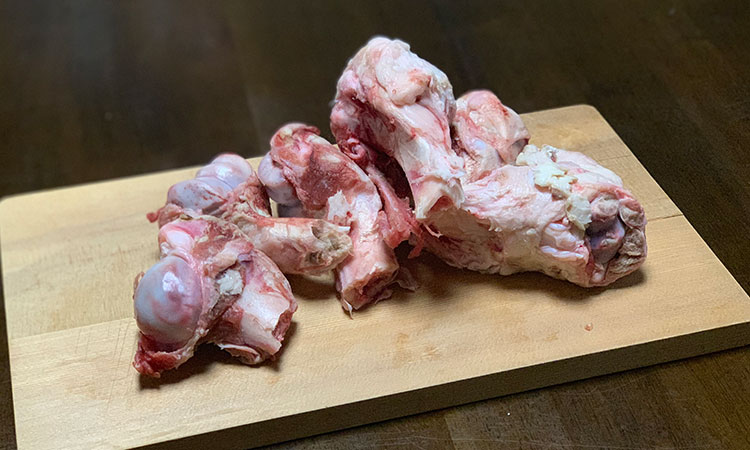
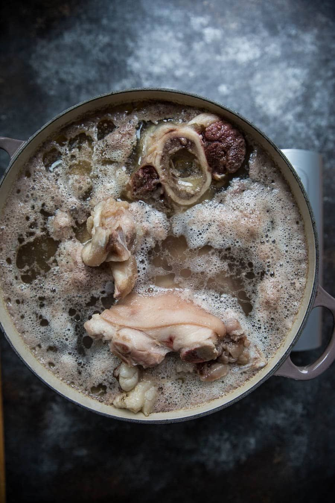
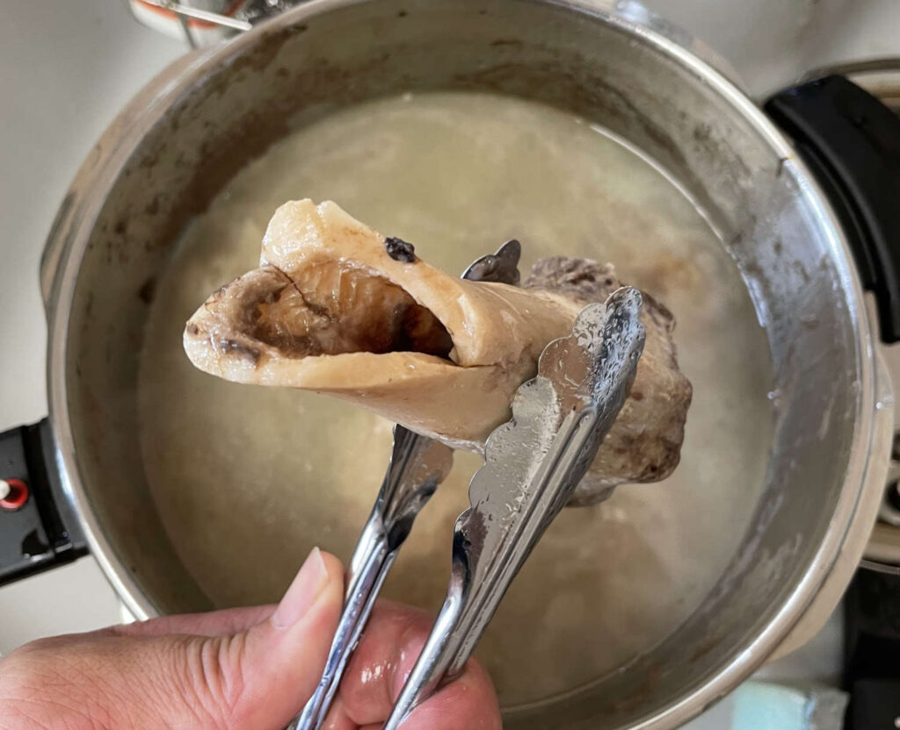
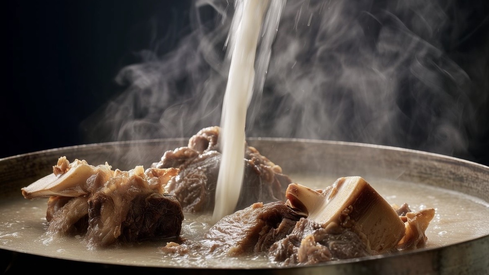

How We Make Our Tonkotsu Soup

Fresh Pork Femur — Nothing Else
Only large, fresh femur bones are used. Rich in marrow and collagen, this specific cut is what gives tonkotsu its signature depth and body — there are no shortcuts when it comes to the foundation.

Clean First. Then Crack Open.
The bones are blanched from cold water, then fully rinsed to remove impurities. Each bone is then cracked open with a mallet — a deliberate step that exposes the marrow and allows it to fully dissolve into the broth. This is where a professional's attention to detail makes all the difference.

90 Minutes Under Pressure
The cleaned bones are pressure cooked for 90 minutes. The intense heat penetrates deep into the bone, extracting every trace of gelatin and marrow. After releasing the pressure, the marrow is carefully removed from each bone and returned to the broth — nothing is wasted.

White, Rich & Deeply Flavored
With the extracted marrow and gelatin added back, the broth is brought to a rolling boil. A hand blender fully emulsifies the marrow and gelatin into the soup. Kombu water is added gradually to round out the umami, resulting in a gleaming white tonkotsu broth of exceptional depth.
Как мы готовим бульон Тонкоцу
Только свежая бедренная кость
Мы используем исключительно крупные свежие бедренные кости. Богатые костным мозгом и коллагеном, именно они придают тонкоцу характерную глубину и насыщенность — в основе нет места компромиссам.
Сначала очистить. Затем расколоть.
Кости бланшируют с холодной воды, затем тщательно промывают для удаления примесей. После этого каждую кость раскалывают молотком — намеренный приём, обнажающий костный мозг и позволяющий ему полностью раствориться в бульоне. Именно здесь профессиональный подход решает всё.
90 минут под давлением
Очищенные кости готовятся в скороварке 90 минут. Интенсивный жар проникает глубоко в кость, извлекая весь желатин и костный мозг. После сброса давления мозг аккуратно вынимают из каждой кости и возвращают в бульон — ничего не теряется.
Белый, насыщенный, глубокий
С добавленным костным мозгом и желатином бульон доводят до интенсивного кипения. Погружной блендер полностью эмульгирует мозг и желатин в суп. Постепенно добавляется вода с комбу для округления умами — результатом становится сияющий белый бульон тонкоцу исключительной глубины.
Ինչպես ենք պատրաստում մեր Տոնկոցու բուլյոնը
Միայն թարմ կոնքազդրային ոսկոր
Մենք օգտագործում ենք միայն խոշոր, թարմ կոնքազդրային ոսկորներ։ Ոսկրածուծով և կոլագենով հարուստ այս կտրվածքն է, որ տոնկոցուին տալիս է բնորոշ խորություն և հարստություն — հիմքի հարցում փոխզիջումներ չկան։
Նախ մաքրել։ Հետո ջարդել։
Ոսկորները բլանշիրվում են սառը ջրից, ապա մանրակրկիտ լվացվում կեղտաջրերը հեռացնելու համար։ Այնուհետև յուրաքանչյուր ոսկոր կոտրվում է մուրճով — դիտավորյալ քայլ, որը բացում է ոսկրածուծը և թույլ է տալիս նրան լիովին լուծվել բուլյոնում։
90 րոպե ճնշման տակ
Մաքրված ոսկորները եփվում են ճնշման կաթսայում 90 րոպե։ Ինտենսիվ ջերմությունը թափանցում է ոսկորի խորքը՝ հանելով ամբողջ ժելատինը և ոսկրածուծը։ Ճնշումը թողնելուց հետո ծուծը ուշադիր հանվում է յուրաքանչյուր ոսկորից և վերադարձվում բուլյոն — ոչինչ չի կորչում։
Սպիտակ, հարուստ և խոր համով
Հավաքված ոսկրածուծն ու ժելատինը ավելացնելուց հետո բուլյոնը ուժգին եռացվում է։ Ձեռքի բլենդերը լիովին էմուլսիֆիկացնում է ծուծն ու ժելատինը սուպի մեջ։ Աստիճանաբար ավելացվում է կոմբուի ջուր ումամին կլորացնելու համար — արդյունքը փայլուն սպիտակ տոնկոցու բուլյոն է՝ բացառիկ խորությամբ։
豚骨スープができるまで
新鮮な大柄のゲンコツのみを使う
使用するのは、新鮮な大柄のゲンコツ（大腿骨）のみ。骨髄とコラーゲンが豊富なこの部位だからこそ、豚骨スープ本来の力強い旨みと濃厚なコクが生まれる。スープの土台に妥協はない。
まず洗い、そして砕く
水から下茹でして血液や不純物を取り除き、流水でしっかりと洗い上げる。その後、金槌で骨を砕き、骨髄がスープへ最大限に溶け出すよう促す。この一手間が、スープの旨みを決定づける職人の技だ。
90分間の加圧調理
洗い上げた骨を圧力鍋で90分間加圧調理する。高圧の蒸気が骨の奥深くまで熱を通し、ゼラチンと骨髄を余すことなく引き出す。減圧後、骨の髄を丁寧に取り出し、スープへと加えていく。何一つ無駄にしない。
白く輝く、深みのある一杯へ
骨髄とゼラチンを加えた状態で、寸胴でグツグツと煮込む。ハンドブレンダーで力強く攪拌し、骨髄とゼラチンをスープに完全に溶け込ませる。昆布水を加えながら旨みを整え、白く輝く豚骨スープが完成する。